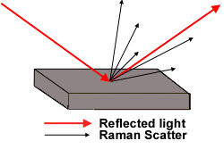
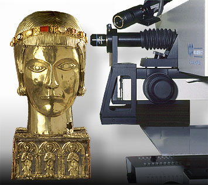

Raman spectroscopyRaman spectroscopy is a technique that enables us to identify not only those materials used in the construction of an object, but also those used in decorating the surface. It can also be used to identify corrosion products, e.g. rust, on the surface of the object. It works by shining a laser beam onto the surface of the object. Most of this light is reflected off unchanged. However a small proportion interacts with the molecules in the material and is scattered. The scattered portion of light, known as the Raman effect, is collected to produce a spectrum. Each material has a unique spectrum associated with it and therefore each one acts as a fingerprint with which to identify materials.
However, the Raman effect is very small and until recently its use as an analytical tool was limited by a lack of suitable equipment. Recent advances, particularly the development of lasers, mean that Raman spectroscopy is now widely used to analyse a wide range of materials. These spectra can be used to identify a variety of materials from plastics to precious gemstones. Raman spectroscopy is totally non-destructive and by using a microscope, spectra can be recorded from very small samples. By using a special attachment on our laser Raman microprobe we can even analyse tiny areas directly on the surface of objects. This picture shows the probe being used to identify the gemstones used to decorate a medieval reliquary. Look up another technique |